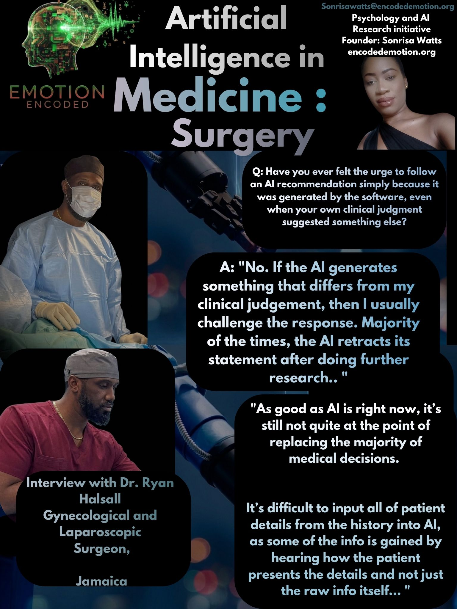

Dr. Ryan Halsall is an Obstetrician and Gynaecologist dedicated to resolving complex patient issues, with a specialized focus on pregnancy care and treating endometriosis. A fellow of the American Congress of Obstetricians and Gynaecologists and a past president of the Jamaica Medical Doctors Association, Dr. Halsall is a prominent advocate for women’s health. His work at ILAP Medical reflects this dedication, where he leverages modern surgical advancements to ensure his patients achieve optimal, pain-free outcomes
I spoke with Dr. Halsall to examine the role of AI tools in high-stakes surgical and diagnostic environments. Dr. Halsall is an active user of ChatGPT, Gemini, and Claude, noting that he utilizes "Yes, all three."
Regarding the transparency of diagnostic AI, Dr. Halsall rejects 'blind' probability scores. He emphasized that transparency is the primary driver of his professional confidence: "Specific responses are preferred so that I can be more confident in the answer. I don’t know what they use when a blind score is given." Consequently, if an algorithm provides a diagnosis without an underlying explanation, his approach is definitive: "Ignore. Complete analysis is required."
The interview highlighted a robust resistance to automation bias. Dr. Halsall explicitly stated that he challenges AI responses that diverge from his own clinical assessment: "No. If the AI generates something that differs from my clinical judgement then I usually challenge the response. Majority of the times the AI retracts it’s statement after doing further research."
A significant barrier to AI adoption in his field is the "human factor" of patient presentation. Dr. Halsall explains that clinical data is not limited to raw inputs; it is heavily derived from observing how a patient presents their history. He noted: "As good as AI is right now, it’s still not quite at the point of replacing the majority of medical decisions. It's difficult to input all of the patient details from the history into AI, as some of the info is gained by hearing how the patient presents the details and not just the raw info itself."
Research Implications for Emotion Encoded
The interview with Dr. Ryan Halsall reinforces the necessity of "White Box" AI in specialized medical practice. His preference for clinical feature lists over probability scores mirrors the demand for metacognitive fidelity, where the AI shows its work so the practitioner can validate it. Dr. Halsall’s experience demonstrates that experienced surgeons use AI as a sparring partner to refine their own thinking, rather than a source of final truth.
Sonrisa Watts // Emotion Encoded // 2026